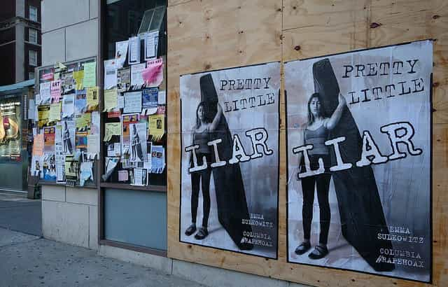

< < < Back
Mattress Girl Threatens To Sue Newsweek For Telling The Story Of The Man She Falsely Accused Of Rape – Return Of Kings
Paul Nungesser’s complaint is filled with lies. I want to warn you to be conscientious about what you publish as ‘fact’ for I may work with a lawyer to rectify any inaccuracies and misrepresentations.
— Emma Sulkowicz
Confirming her hostility towards any serious investigation of her false rape claim, perennial attention-seeker Emma Sulkowicz has made a thinly veiled legal threat against Newsweek. Choosing to (finally) take at least a two-dimensional look at the campus “rape” hysteria, the publication had the gall to interview the man Sulkowicz stalked for months, Paul Nungesser, and get his side of the story. German national Nungesser has previously been interviewed by both American and German outlets, but the overall airtime and newspaper space he has received from the media amounts to a pittance compared to Sulkowicz and her increasingly bizarre antics.
Yes, that’s right, a mainstream features writer, Max Kutner, has decided to buck the trend of journalists effectively banning any account from Nungesser. In terms of the overall fabrications about a purported lack of campus safety, this blacklisting is unsurprising. Newsweek itself had been a repeat offender, disseminating the widely debunked “one in four or five” rate of college sexual assault, as reported by Ashe Schow of The Washington Examiner.
For what seems like an eternity, Emma Sulkowicz has been afforded all the privileges of someone whose grossly unfounded (read: false) accusation is taken as Gospel truth. Columbia University, even after an aborted police investigation and multiple college tribunal decisions, acquiesced to her continued slandering, stalking, bullying and harassment of the exonerated Nungesser. The fascistic Senator for New York, Kirsten Gillibrand, resorted to calling Nungesser a rapist and invited Sulkowicz to Obama’s State of the Union address. Countless others shielded and justified ever more unhinged behavior as well.
The rhetoric is becoming more and more Orwellian
Because Kirsten Gillibrand and others take the results of gerrymandered surveys as rape convictions, there’s no rationale for letting accused men even tell story their story, let alone have it heard during impartial investigations.
With “I believe women”, there is no need to tell an accused’s story. It’s why, for example, Sulkowicz resorted to saber-rattling in her response to Newsweek. The statement from her quoted above screams, “Listen and believe! Facts are determined by the accuser!” In addition, if this were Nungesser replying to a publication (after all, nothing was ever proven by Sulkowicz), the backlash would be merciless.
Some readers may be half-rejoicing at what seems to be Newsweek‘s turn for the better. A word (or several paragraphs) of caution is needed, though. Because Sulkowicz herself has been on the defensive for a while (the reaction to her mock-rape “art piece” from her powerful backers was underwhelming), anticipate the same from the broader rape hysteria crowd after this Newsweek piece. And then wait for the counterattack.
Disassociating from the poster girl to keep the false narrative going?

Newsweek could actually still be incredibly biased. Sulkowicz went off the rails completely with her streamed rape acting and the publication probably senses this, hence the Nungesser interview to save journalistic face.
As I recently reported, feminists and their white knight pets are delving into new and dumbed down ways of trying to butcher due process and castigate all men as would-be rapists. The Hunting Ground, a convoluted pile of fiction, will be followed by numerous other attempts to further emotionalize discussions about rape accusations at the expense of objectivity. Sulkowicz is fast becoming a liability for even Kirsten Gillibrand, so the emphasis will shift to new methods or new, less superficially extreme poster girls.
Plus, the media itself is acutely aware that many Americans, a silent majority, are not swallowing the “rape is everywhere” mantra. CNN, which produced The Hunting Ground and was entirely receptive to Sulkowicz, has long been a hotbed for incredulous and condemnatory reader comments which question the network’s distinctly anti-male bias. Newsweek‘s apparently non-partisan coverage regarding Nungesser this time may just be a tokenistic gesture or a one-off nod to the skepticism about “rape culture” from the American public.
We must not relent in our exposure of false rape frauds
In the aftermath of Jackie Coakley being exposed as a false rape artist, no major figure questioned the official platform given to “advocate” Emily Renda. Our enemies have powerful resources that are not cut off when they fail spectacularly.
Whatever its intentions, Newsweek has been forced to temporarily change its tune. This is the culmination of intense non-mainstream pressure, of which Return of Kings has been an integral part. The exposure of Sulkowicz and her ideological contemporary, UVA student Jackie Coakley, among numerous other instances, has led to significant delays in the enactment of more draconian college rape tribunal laws. Nonetheless, there is still a great deal of work to be done.
Under no circumstances can we take our foot off the accelerator. Without the watchful eyes of those committed to the rights of men accused of sexual assault, what little legal and social protections remain will quickly evaporate.
We cannot count on desperate fruit-loops like Emma Sulkowicz in challenging campus rape lies.
Read More: Mattress Girl Emma Sulkowicz Makes A Rape Sex Tape